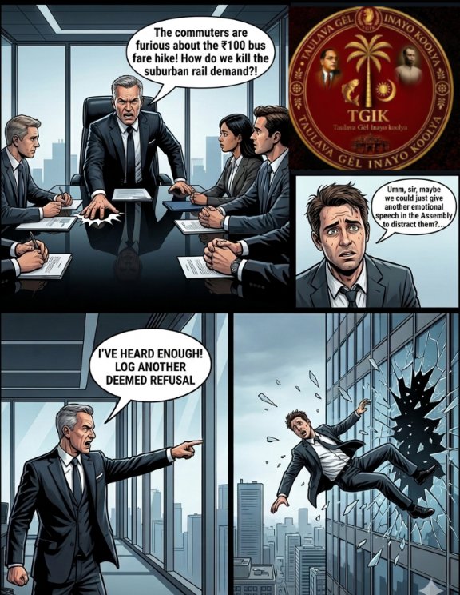

RAILED IN CRISIS: Commuters Trapped in ₹100 Bus Fare Hike Monopoly Demand Urgent Udupi–Mangaluru–Puttur Sub-Urban Railway System

A silent economic crisis is unfolding across the landscape of Tulunadu. Over the past month, a sudden, crushing transit price hike on the 58-to-60-kilometer corridor between Udupi and Mangaluru has seen express bus fares surge by ₹100. This sharp escalation has triggered widespread public fury among working professionals, low-income daily wage earners, and university students who now find themselves economically cornered by a predatory private highway monopoly.
In response, an aggressive, grassroots public movement is rapidly consolidating across Dakshina Kannada and Udupi districts. The singular, unified demand of the public is clear: the immediate intervention of the Ministry of Railways to establish a dedicated, low-cost Udupi–Mangaluru–Puttur Local Sub-Urban Rail Network for Tulunadu.
The Anatomy of a Monopoly: The Crushing Reality of a ₹100 Fare Hike
The transport corridor connecting Udupi, Mangaluru, and Puttur represents one of the densest economic and educational arteries in the coastal belt. Every morning, tens of thousands of citizens commute across this stretch. Students rely on it to reach world-class educational hubs, patients travel to major medical academies, and professionals commute to corporate offices.
With no viable transport alternatives, commuters have historically been left entirely dependent on private and public express buses running along National Highway 66 (NH-66). The recent price hike of ₹100 per ticket has dealt a catastrophic blow to middle-class and working-class household budgets.
For a daily commuter, a ₹100 increase per single trip translates directly to an additional ₹4,000 to ₹5,000 in monthly travel expenses. For students and young professionals earning entry-level salaries, this artificial inflation makes commuting to work or college financially unviable.

The "Ghost Hours" Rail Timetable: A Bureaucratic Failure
The true tragedy of this economic exploitation is that a robust, multi-crore railway infrastructure already exists right alongside the highway. The tracks are laid, the stations are built, and the line is fully electrified. Yet, current train timetables seem deliberately designed to be useless for local taxpayers.
A review of the current daily schedules under the Konkan Railway Corporation Limited (KRCL) and Southern Railway highlights a stark systemic failure:
- The Dead-of-Night Corridor: Key daily express trains traveling from Udupi toward Mangaluru Central (MAQ) arrive either during the dead of night (such as the Netravati Express at 3:02 AM) or long after the working day has already begun (such as the Mangaluru Express at 11:28 AM).
- The Missing Link to Puttur: While the Ministry of Railways recently extended the Mangaluru–Kabaka Puttur passenger service up to Subrahmanya Road, the timings fail to integrate with trains arriving from Udupi. This lack of coordination leaves the vital Udupi–Mangaluru–Puttur commercial triangle completely fractured.
The Blueprint for the Tulunadu Sub-Urban System
Regional passenger welfare associations, including the Paschima Karavali Railway Yatri Abhivriddhi Samiti, argue that a suburban rail network could transport commuters for a fraction of current bus fares. A single MEMU (Mainline Electric Multiple Unit) ticket for 60 km would cost merely ₹15 to ₹30, completely undercutting the exorbitant bus fares now being charged on the highway.
1. The Synchronized Morning & Evening MEMU Loop
The Ministry of Railways must introduce a dedicated local commuter loop with fixed timings: Morning rush hour departures should leave Udupi at 7:15 AM clearing intermediate stations like Suratkal to reach Mangaluru Central by 8:30 AM, with corresponding evening returns clearing Puttur by 5:30 PM to preserve structural baseline pricing options.
2. Resolving the Thokur Jurisdictional Bottleneck
A major administrative roadblock is the operational handover point at Thokur, where jurisdiction switches from Konkan Railway (KRCL) to the Palakkad Division of Southern Railway. Public memorandums demand that both railway zones establish a unified regional scheduling desk to ensure local commuter trains are never delayed or sidelined in favor of national long-distance trains.
How to Join the Movement
- Log Your Grievance: File a formal demand for an Udupi–Mangaluru–Puttur morning MEMU train on the central RailMadad Portal under the "Suggestions / Passenger Amenities" tab.
- Submit a Public Petition: Sign the ongoing regional memorandum being compiled by local passenger welfare associations to be submitted to the Divisional Railway Manager (DRM) of the Palakkad Division.